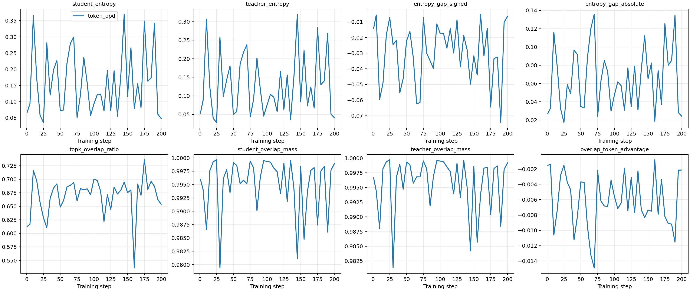
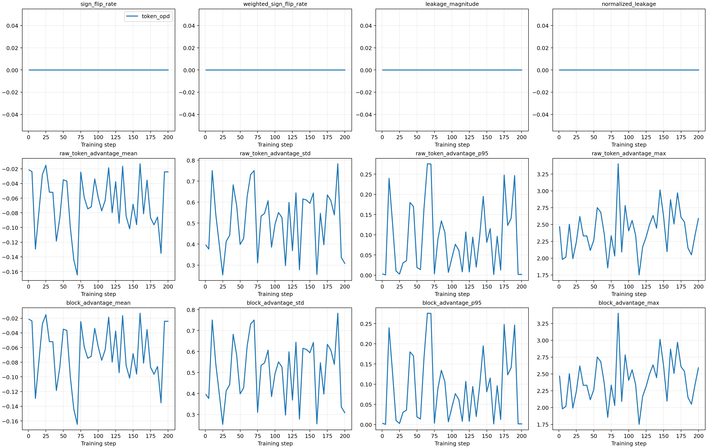
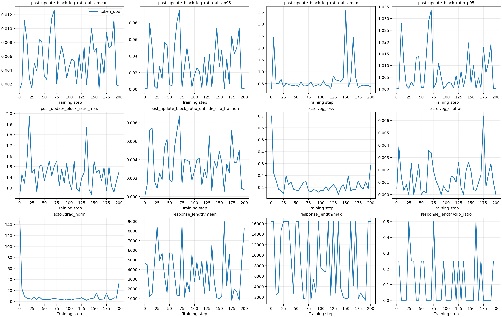
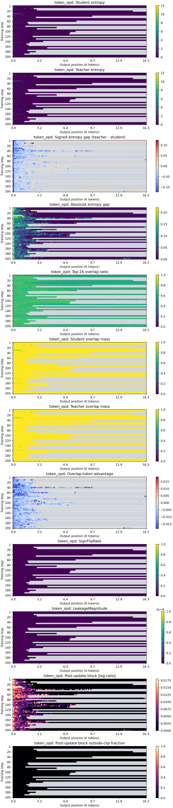
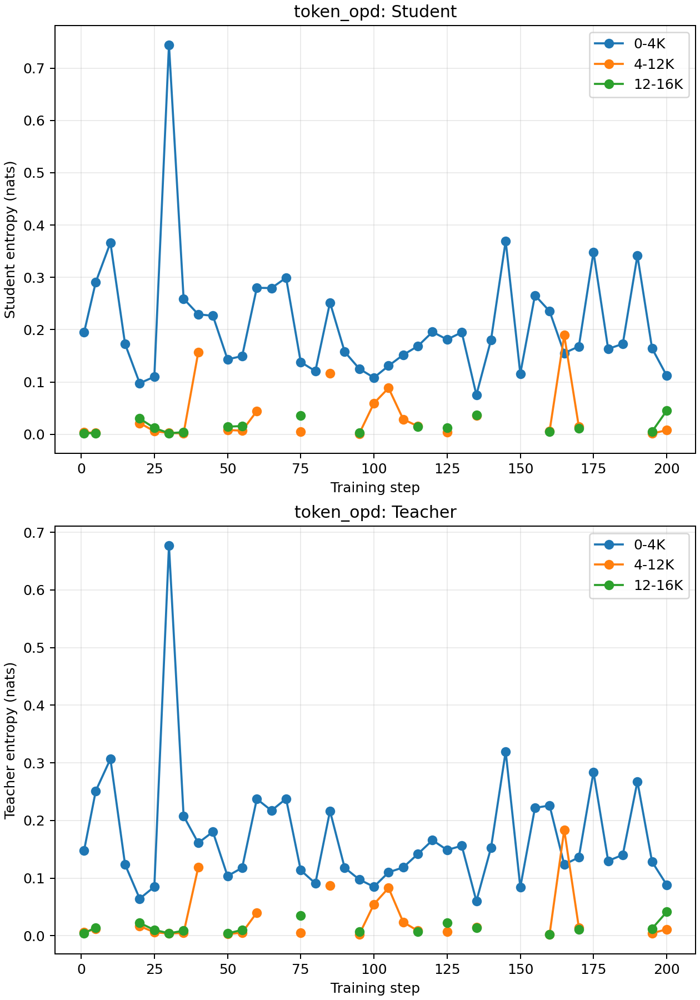
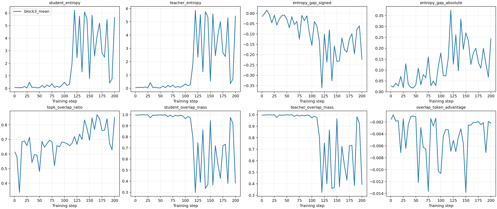
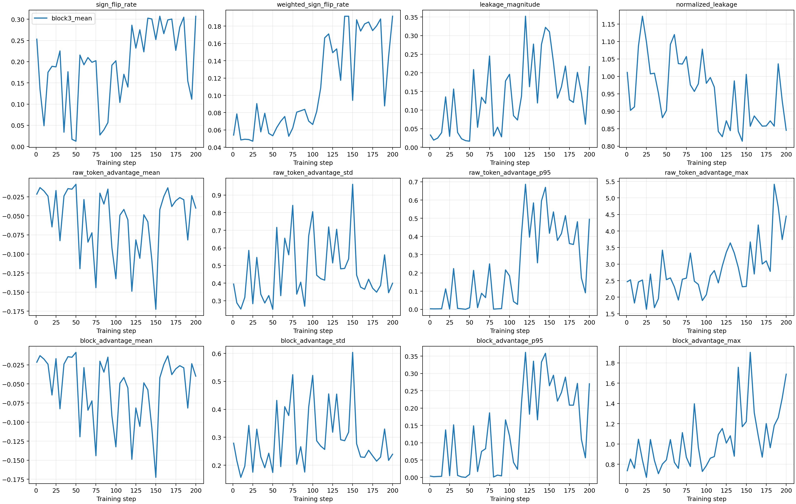
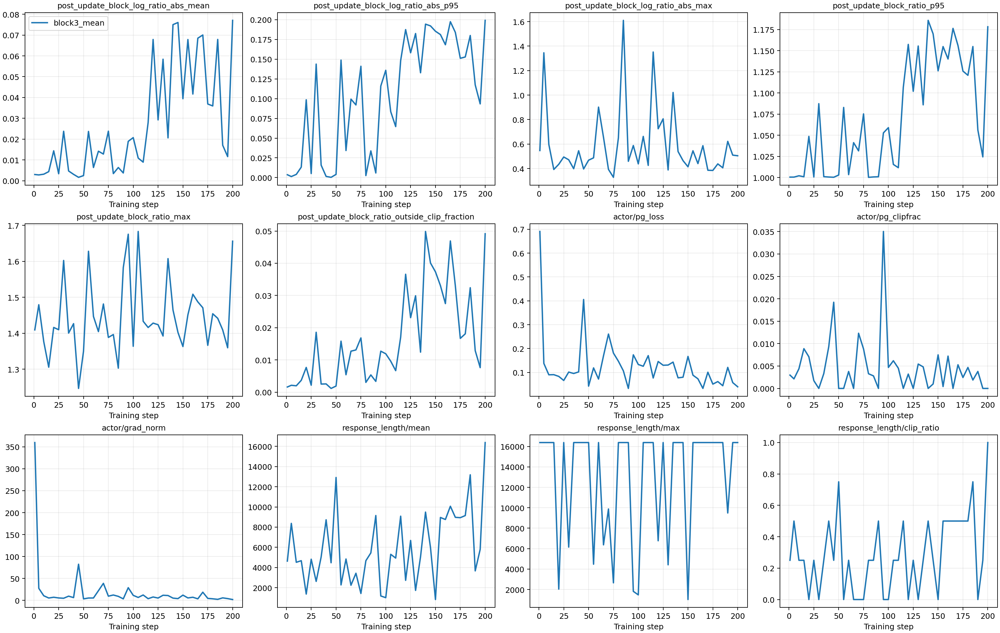
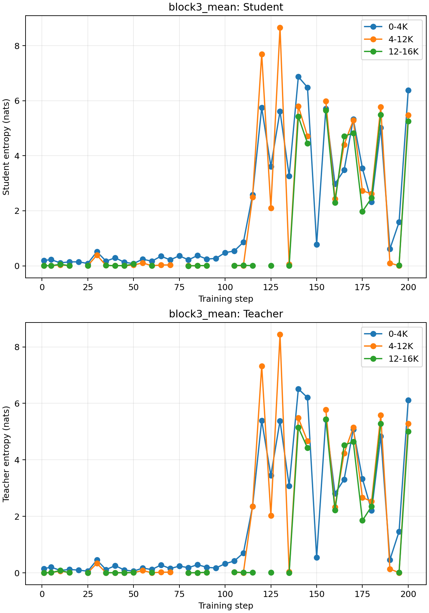

Qwen3 Block3 同机严格配对验证
sampled-token OPD 与 block3_mean 的严格配对验证报告
Block3 在 Step 200 的 macro Avg@8 与 Pass@8 均为正，且两个 paired bootstrap 95% CI 均严格高于 0。
StudentQwen3-1.7B-Base
TeacherQwen3-4B-Base-GRPO
Matched prompt batches41
Bootstrap10,000 paired replicates
实验契约
| Student revision | None |
|---|---|
| Teacher revision | None |
| Training data SHA-256 | cf359f257a320aecb6448e824b7cc34f70e694583be3df7177b14f359b7959cf |
| Eval data SHA-256 | c5c9f1b3f65eb40053cae14c005c39e29443d04acbbabba873e98d64818a9680 |
| Runtime commit | 9b3b8b76bcdf02d0a4cfe4720cecb24bc7203977 |
| Fixed training | DAPO-Math-17K pool; seed 21; 200 steps; batch 4; 8 rollouts; LR 2e-6; max response 16,384. |
| Fixed evaluation | Math500, AIME24, AIME25, AMC23; n=8; seeds 21-28; temperature 1.0; top-p 0.9; max 16,384; thinking off. |
主结果：固定历史 grader
| Checkpoint | Token Avg@8 | Block3 Avg@8 | Delta | Avg 95% CI | Token Pass@8 | Block3 Pass@8 | Delta | Pass 95% CI |
|---|---|---|---|---|---|---|---|---|
| Step 50 | 0.1451 | 0.2085 | 0.0634 | [0.0503, 0.0777] | 0.3900 | 0.4242 | 0.0342 | [-0.0103, 0.0801] |
| Step 100 | 0.1753 | 0.1856 | 0.0104 | [-0.0030, 0.0240] | 0.4334 | 0.4424 | 0.0090 | [-0.0368, 0.0558] |
| Step 200 | 0.1890 | 0.2404 | 0.0514 | [0.0353, 0.0680] | 0.4155 | 0.4739 | 0.0584 | [0.0141, 0.1039] |
Step 200 分任务
| Task | Token Avg@8 | Block3 Avg@8 | Delta | Token Pass@8 | Block3 Pass@8 | Delta |
|---|---|---|---|---|---|---|
| math500 | 0.4585 | 0.5475 | 0.0890 | 0.8200 | 0.8480 | 0.0280 |
| aime24 | 0.0542 | 0.0875 | 0.0333 | 0.2000 | 0.2667 | 0.0667 |
| aime25 | 0.0250 | 0.0542 | 0.0292 | 0.1000 | 0.1667 | 0.0667 |
| amc23 | 0.2184 | 0.2726 | 0.0542 | 0.5422 | 0.6145 | 0.0723 |
Step 200 prompt 级配对
| Metric | Block3 win | Tie | Block3 loss |
|---|---|---|---|
| Avg@8 | 292 | 235 | 116 |
| Pass@8 | 41 | 585 | 17 |
敏感性分析：内置 VERL grader
| Checkpoint | Token Avg@8 | Block3 Avg@8 | Delta | Avg 95% CI | Token Pass@8 | Block3 Pass@8 | Delta | Pass 95% CI |
|---|---|---|---|---|---|---|---|---|
| Step 50 | 0.1082 | 0.1485 | 0.0403 | [0.0306, 0.0507] | 0.2700 | 0.2942 | 0.0242 | [-0.0160, 0.0658] |
| Step 100 | 0.1253 | 0.1228 | -0.0025 | [-0.0129, 0.0077] | 0.2838 | 0.2843 | 0.0005 | [-0.0383, 0.0402] |
| Step 200 | 0.1309 | 0.1675 | 0.0366 | [0.0237, 0.0506] | 0.2750 | 0.3138 | 0.0388 | [0.0015, 0.0790] |
训练诊断与位置热力图
token_opd





block3_mean





结论范围：一个严格配对的 training seed。题目分层 bootstrap 量化固定 checkpoint 下的 prompt 不确定性，不能替代多 training-seed 方差。